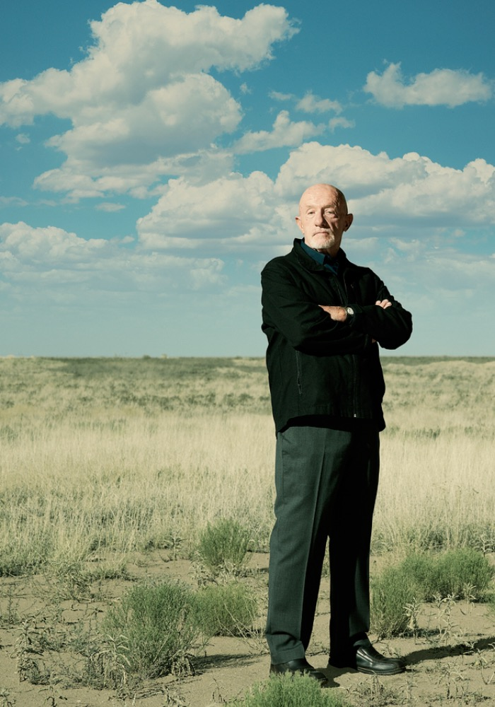
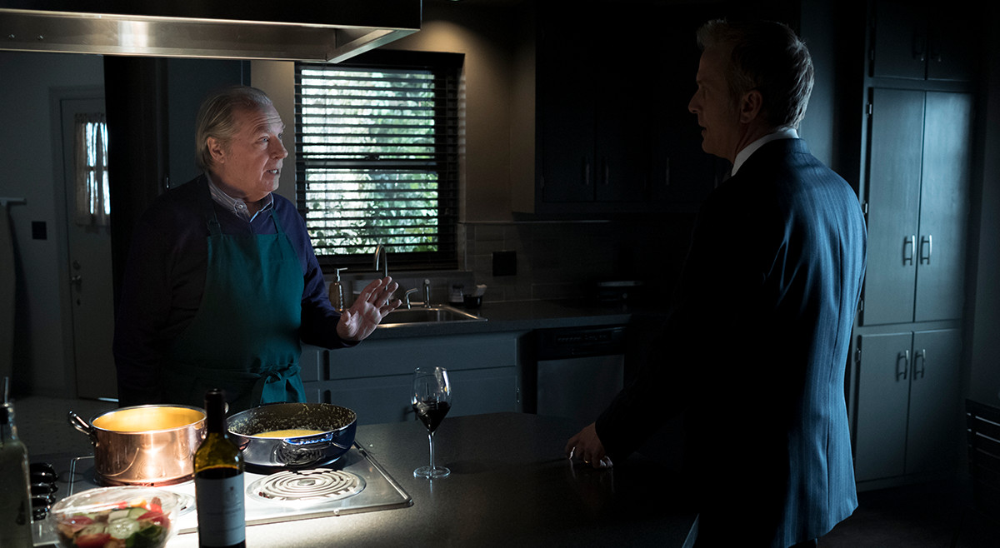

PUBLIC DEFENDER · ELDER LAW · DREAMER
先做个“正经律师”
从收发室一路读完法学院，他比任何人都懂小人物需要什么：有人肯听，有人肯拼，还有一条看起来不起眼的生路。
韧性 MAX同理心 87%规矩 ？
ALBUQUERQUE'S MOST COLORFUL COUNSEL
INJURED? IN AN ACCIDENT?
别发愁——打给索尔！
ADVERTISEMENT!
视频由哔哩哔哩提供。若无法在当前浏览器播放，请使用左侧链接打开。
01 / THE MAN
从吉米·麦吉尔到索尔·古德曼——这不是简单的改名，而是一场关于野心、底线和自我重塑的电视传奇。
PUBLIC DEFENDER · ELDER LAW · DREAMER
从收发室一路读完法学院，他比任何人都懂小人物需要什么：有人肯听，有人肯拼，还有一条看起来不起眼的生路。
CRIMINAL LAW · SHOWMAN · PROBLEM SOLVER
鲜艳西装、洗脑广告、永不占线的电话。索尔不出售庄严，他出售“办法”——尤其当传统办法已经把门关上时。
“S’all good, man.”—— 一个名字的诞生
02 / LEGAL SERVICES
小人物的麻烦，也值得被认真对待。老人权益、刑事辩护、民事争议——三个业务方向，一套索尔式解决问题的态度。
账单越看越不对劲？别让一堆小字，把老人应有的权益藏起来。
剧情举例 · 非真实办案记录
吉米发现养老院向老人系统性多收费，开始收集账单，并与查克一起调查、推动集体诉讼。
吉米从客户的日常账单察觉异常，追查被销毁的文件，再与查克拼接证据。这是早期吉米认真维护老人权益的重要情节，案件后续由多家律所参与推进，不能视为他一人办结的胜诉业绩。
角色看点：同理心、调查韧性，以及兄弟之间短暂的合作。
事情闹到法庭，不代表故事已经结束。复杂案情，也需要有人把它讲清楚。
剧情举例 · 非真实办案记录
休尔因袭击警察面临牢狱风险。金担任辩护律师，执照被暂停的吉米用一场虚构家乡声援的骗局协助她。
大量所谓家乡支持信与虚假的电话证言，让检方和法官面对一场被人为制造的声援。金与检方达成协议，休尔免于入狱。此时吉米不能执业，不能将这段剧情描述为“索尔独立出庭获胜”。
伦理警示：情节涉及欺骗司法参与者，不是正常辩护方法或可仿效的法律策略。
谈不拢的条件、迟迟解决不了的争议？把问题摆上桌，寻找沟通与协商的空间。
剧情举例 · 非真实办案记录
梅萨维德银行计划建设呼叫中心，阿克先生不愿搬离。索尔代表阿克交涉，金则同时代表银行。
金与吉米原本希望让阿克保留住处，或获得更好的补偿。索尔随后在谈判中采取出乎金意料的激进手段，土地纠纷也成为两人关系中的一次冲突。
伦理警示：双方的私下协作存在明显利益冲突；这不是值得照搬的谈判范例。
03 / FOUR VIEWS OF JIMMY
粉丝彩蛋区 · 以下为角色主题改写文案，未核实为剧中逐字台词，并非原声摘录或真实客户评价。
01 / 理解与心疼
角色主题改写 · 非逐字原台词“He’s smarter than people think, but he keeps breaking his own heart.”
他比所有人想的都聪明，可他总在亲手伤害自己。
这组文案从金的视角读吉米：聪明、敏锐，也渴望被理解。让人心疼的不只是他的处境，而是他一次次用花招和伪装，推开自己真正珍惜的人。

AMC 角色肖像 ↗02 / 劝诫与代价
角色主题改写 · 非逐字原台词“You’re a good man, Jimmy. But you keep choosing the easy way.”
你本是个好人，吉米。但你总选择那条捷径。
这组文案借麦克务实、克制的语气，追问吉米的选择：能解决眼前麻烦的捷径，未必能通向想要的生活。聪明可以脱身，却不能免除每一次选择的代价。

AMC 剧照 ↗03 / 偏见与裂痕
角色主题改写 · 非逐字原台词“Jimmy will always be Slippin’ Jimmy. He cannot change.”
吉米永远是那个滑头吉米，本性难移。
这组文案围绕兄弟之间最深的裂痕展开：吉米想得到认可，查克却始终难以放下对“滑头吉米”的判断。当一个人永远被旧标签定义，证明自己也可能变成伤害彼此的执念。
04 / 天赋与惋惜
角色主题改写 · 非逐字原台词“He has so much talent, and he wastes it all on tricks.”
他天赋卓绝，却把一切浪费在花招诡计上。
这组文案从职业同行的视角写惋惜：吉米的口才、创意和洞察力本可以成就出色的律师，花招却不断侵蚀信任。令人遗憾的不是没有天赋，而是天赋被用来赢下一场又一场错误的胜利。
这个角色暂无文案。试试其他角色，或点击“重置筛选”。
文案以角色视角作主题解读，配图不代表对应台词场景。剧照与角色肖像版权归 AMC / Sony Pictures Television 及相关权利方；仅供粉丝趣味展示，与 AMC / Sony 无关。
BONUS / THE COMPLAINT DEPARTMENT
粉丝原创玩梗 · 下方六条角色便签模仿剧中人物语气，均为虚构创作，不是原剧台词，也不是真实客户评价。你添加的本机留言会单独展示。
文件整理得不错，跑腿也很积极。下次想替我解决职业危机之前，先问我一声。律师费可以谈，替我做主不可以。
我来评价的是职业规范，不是你的广告创意。彩色西装不能替代法律训练。另外，这块电子留言板为什么还通着电？
律师很健谈，沙漠旅行的细节也相当丰富。我尤其欣赏他讲故事时的认真态度。下次见面，我们再从头聊聊。
业务能力值得讨论，但把我的职业生涯当双人娱乐项目就不必了。若你们有空，建议把创意用在自己的客户身上。
服务效率尚可，认识的人很多。唯一的问题是，他偶尔以为自己可以决定什么时候结束合作。这个部分仍需改进。
事情能办。嘴能闭上就更好。
* 角色留言为粉丝原创玩梗；访客留言仅存于当前浏览器，不构成真实客户评价，不接受真实法律委托。与 AMC / Sony 无关。
ONE CALL CAN CHANGE EVERYTHING
OFFICE9800 Montgomery Blvd NE
Albuquerque, New Mexico
HOURSMON–SUN / 24-ish
Appointments? Optional.
你的本机留言 非剧中角色 · 其他访客不可见
还没有便签。写下第一条留言吧。